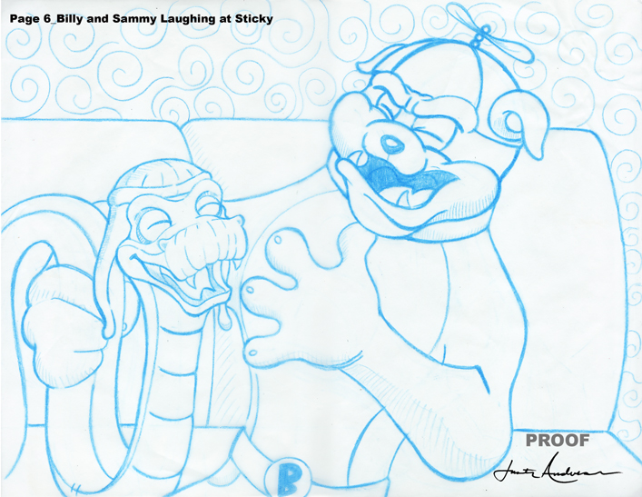
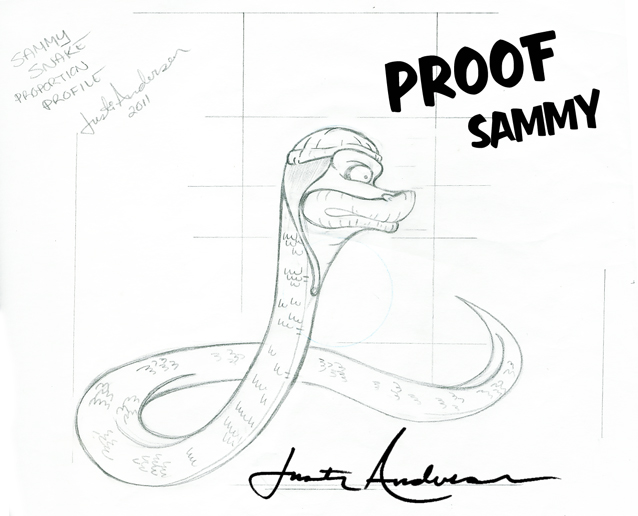

Character Design & Children’s Publishing
Sticky Paws
Sticky Paws began during a conversation with Robert Strickland at Barnes & Noble. In less than thirty minutes, the idea of a raccoon character built around honesty, integrity and strong values was born.
The project grew into a cast of characters, a published book, interior illustrations, web concepts, stickers, apparel and promotional materials.
Back To Characters
Character Sheet


Sketches


Supporting Characters


Interior Pages


Additional Produced Materials